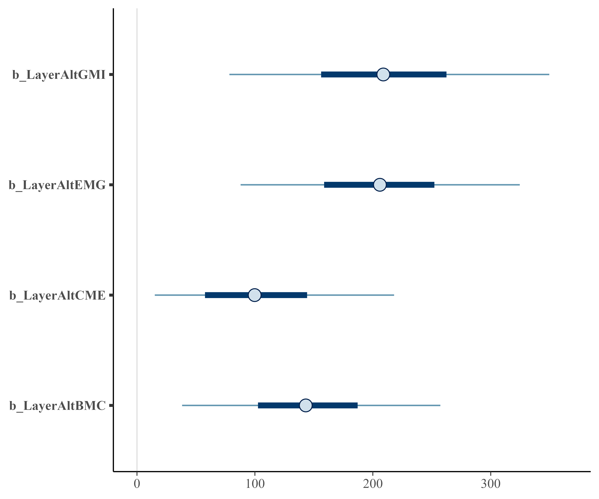
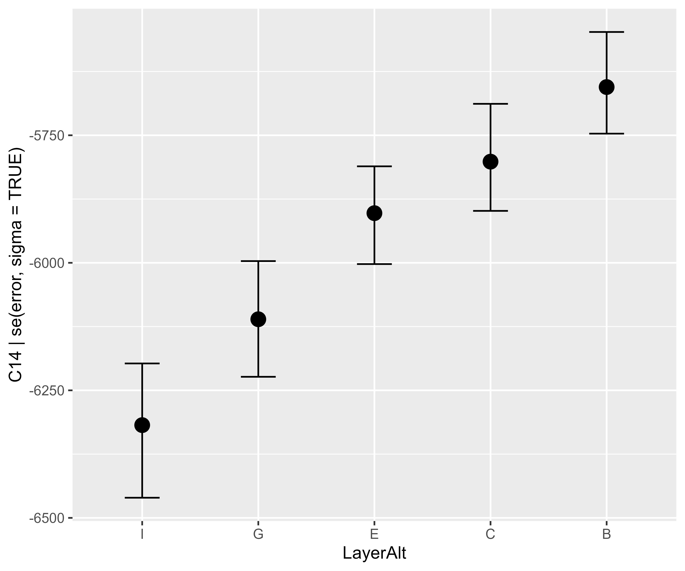

Mattan S. Ben-Shachar wrote an excellent tutorial about how to impose ordering constraints in Bayesian regression models. In that post, the data comes from archaeology (inspired by Buck, 2017 but not an exact copy). We have samples from different layers (Layer) in a site, and for each sample, we have a C14 radiocarbon date measurement and its associated measurement error.
Because of how the layers are ordered—new stuff piled on top of older stuff—we a priori expect deeper layers to have older dates, so these are the ordering constraints:
\[ \mu_{\text{Layer I}} < \mu_{\text{Layer G}} < \mu_{\text{Layer E}} < \mu_{\text{Layer C}} < \mu_{\text{Layer B}} \]
where μ is the average C14 age of a layer.
Ben-Shachar’s post works through some ways in brms to achieve this constraint:
Fit the usual model but filter out posterior draws where the ordering constraint is violated.
Have the Stan sampler
rejectdraws where the constraint is violated. But note that the documentation forrejecthas a section titled “Rejection is not for constraints”.Use brms’s monotonic effect
mo()syntax.
In this post, I am going to add another option to this list:
- Use contrast coding so the model parameters represent the differences between successive levels, and use priors to enforce the ordering constraint.
Big idea of contrast coding
When our model includes categorical variables, we need some way to code those variables in our model (that is, use numbers to represent the category levels). Our choice of coding scheme will change the meaning of the model parameters, allowing us to perform different comparisons (test different statistical hypotheses) about the means of the category levels. Let’s spell that out again, because it is the big idea of the contrast coding:
different contrast coding schemes <->
different parameter meanings <->
different comparisons / hypotheses(Isn’t that an eye-popping graphic?)
The toolbox of contrast coding schemes is deep but also confusing. Whenever I step away from R’s default contrast coding, I usually have these pages open to help me: some tutorial on a UCLA page, Lisa DeBruine’s comparison article, and the menu of contrast schemes in emmeans. So, let’s review the basics by looking at R’s default contrast coding scheme.
The default: dummy coding
By default, R will code categorical variables in a regression model using “treatment” or “dummy” coding. In this scheme,
- The intercept is the mean of one of the category levels (the reference level)
- Parameters estimate the difference between each other level and the reference level
Let’s fit a simple linear model and work through the parameter meanings:
Here, the (Intercept) is the mean of the reference level, and the reference level is the level of the categorical variable not listed in the other parameter names (LayerB). Each of the other parameters is a difference from that reference level. Layer C’s mean is (Intercept) + LayerC. The model.matrix() shows how these categorical variables are coded in the model’s design/contrast matrix:
# Matrix has 1 row per observation but we just want 1 per category level
mat_m1 <- m1 |>
model.matrix() |>
unique()
mat_m1
#> (Intercept) LayerC LayerE LayerG LayerI
#> 1 1 0 0 0 0
#> 4 1 1 0 0 0
#> 6 1 0 1 0 0
#> 9 1 0 0 1 0
#> 11 1 0 0 0 1The (Intercept) is the model constant, so naturally, it’s switched on (equals 1) for every row. Each of the other columns are indicator variables. layerC turns on for the layer C rows, layerE turns on for layer E rows, and so on.
Matrix multiplying the contrast matrix by the model coefficients will compute the mean values of each layer.
\[ \mathbf{\hat y} = \mathbf{X}\boldsymbol{\beta} \]
Think of this equation as a contract for a contrast coding scheme: Multiplying the contrast matrix by the model coefficients should give us the means of the category levels.
If the matrix multiplication is too quick, here it is in slow motion where each row has been weighted (multiplied) by coefficients:
# Sums of the rows are the means
mat_m1 %*% diag(coef(m1))
#> [,1] [,2] [,3] [,4] [,5]
#> 1 -5670.667 0.0000 0.0000 0.0000 0.0000
#> 4 -5670.667 -137.3333 0.0000 0.0000 0.0000
#> 6 -5670.667 0.0000 -223.6667 0.0000 0.0000
#> 9 -5670.667 0.0000 0.0000 -438.3333 0.0000
#> 11 -5670.667 0.0000 0.0000 0.0000 -628.3333Successive differences coding
Now, let’s look at a different kind of coding: (reverse) successive differences coding. In this scheme:
- The intercept is the mean of the levels means
- Parameters estimate the difference between adjacent levels
- but I have to reverse how the levels are ordered in the underlying
factor()so that the differences are positive, comparing each layer with the one below it. (LayerB - LayerCshould be positive).
We apply this coding by creating a new factor and setting the contrast(). R lets us set the contrast to the name of a function that computes contrasts, so we use "contr.sdif".
contr.sdif <- MASS::contr.sdif
# Reverse the factor levels
table1$LayerAlt <- factor(table1$Layer, rev(levels(table1$Layer)))
contrasts(table1$LayerAlt) <- "contr.sdif"Then we just fit the model as usual. As intended, the model’s coefficients are different.
We can compute the mean of layer means and the layer differences by hand to confirm that the model parameters are computing what we expect.
# Make a list so we can write out the diffs easily
layer_means <- table1 |>
split(~ Layer) |>
lapply(function(x) mean(x$C14))
str(layer_means)
#> List of 5
#> $ B: num -5671
#> $ C: num -5808
#> $ E: num -5894
#> $ G: num -6109
#> $ I: num -6299
data.frame(
model_coef = coef(m2),
by_hand = c(
mean(unlist(layer_means)),
layer_means$G - layer_means$I,
layer_means$E - layer_means$G,
layer_means$C - layer_means$E,
layer_means$B - layer_means$C
)
)
#> model_coef by_hand
#> (Intercept) -5956.20000 -5956.20000
#> LayerAltG-I 190.00000 190.00000
#> LayerAltE-G 214.66667 214.66667
#> LayerAltC-E 86.33333 86.33333
#> LayerAltB-C 137.33333 137.33333Back to our contrast coding contract, we see that the contrast matrix matrix-multiplied by the model coefficients gives us the level means.
mat_m2 <- unique(model.matrix(m2))
mat_m2 %*% coef(m2)
#> [,1]
#> 1 -5670.667
#> 4 -5808.000
#> 6 -5894.333
#> 9 -6109.000
#> 11 -6299.000
# By hand
aggregate(C14 ~ Layer, table1, mean)
#> Layer C14
#> 1 B -5670.667
#> 2 C -5808.000
#> 3 E -5894.333
#> 4 G -6109.000
#> 5 I -6299.000It’s so clean and simple. We still get the level means and the parameters estimate specific comparisons of interest to us. So, how are the categorical variables and their differences coded in the model’s contrast matrix?
mat_m2
#> (Intercept) LayerAltG-I LayerAltE-G LayerAltC-E LayerAltB-C
#> 1 1 0.2 0.4 0.6 0.8
#> 4 1 0.2 0.4 0.6 -0.2
#> 6 1 0.2 0.4 -0.4 -0.2
#> 9 1 0.2 -0.6 -0.4 -0.2
#> 11 1 -0.8 -0.6 -0.4 -0.2Wait… what? 😕
The Comparison Matrix
When I first started drafting this post, I made it to this point and noped out for a few days. My curiosity did win out eventually, and I hit the books (remembered this tweet and this handout, watched this video, read this paper, and read section 9.1.2 in Applied Regression Analysis & Generalized Linear Models). Now, for the rest of the post.
The best formal, citable source for what I describe here is Schad and colleagues (2020), but what they call a “hypothesis matrix”, I’m calling a comparison matrix. I do this for two reasons: 1) to get away from hypothesis testing mindset (see Figure 1) and 2) because we are using the hypothesis matrix to apply a constraint among parameter values (remember that?).
{% include figure image_path=“2023-07-bayes-sign.jpeg” alt=“In this house, we beleive: Bayes is good, estimate with uncertainty is better than hypothesis testing, math is hard, sampling is easy, Bayesian estimation wtih informative priors is indistinguishable from data falsifications, and it kicks ass.” caption=“Figure 1. The sign in my yard.” %}{: style=“max-width: 66%; display: block; margin: 2em auto;”}
In this approach, we define the model parameters β by matrix-multiplying the the comparison matrix C (which activates or weights different level means) and the levels means μ.
\[ \mathbf{C}\boldsymbol{\mu} = \boldsymbol{\beta} \\ \begin{bmatrix} \textrm{weights for comparison 1} \\ \textrm{weights for comparison 2} \\ \textrm{weights for comparison 3} \\ \cdots \\ \end{bmatrix} \begin{bmatrix} \mu_1 \\ \mu_2 \\ \mu_3 \\ \cdots \\ \end{bmatrix} = \begin{bmatrix} \beta_0 \\ \beta_1 \\ \beta_2 \\ \cdots \\ \end{bmatrix} \]
So, in the dummy-coded version of the model, we had the following comparison matrix:
\[ \mathbf{C}_\text{dummy}\boldsymbol{\mu} = \boldsymbol{\beta}_\text{dummy} \\ \begin{bmatrix} 1 & 0 & 0 & 0 & 0 \\ -1 & 1 & 0 & 0 & 0 \\ -1 & 0 & 1 & 0 & 0 \\ -1 & 0 & 0 & 1 & 0 \\ -1 & 0 & 0 & 0 & 1 \\ \end{bmatrix} \begin{bmatrix} \mu_{\text{Layer B}} \\ \mu_{\text{Layer C}} \\ \mu_{\text{Layer E}} \\ \mu_{\text{Layer G}} \\ \mu_{\text{Layer I}} \\ \end{bmatrix} = \begin{bmatrix} \beta_0: \mu_{\text{Layer B}} \\ \beta_1: \mu_{\text{Layer C}} - \mu_{\text{Layer B}} \\ \beta_2: \mu_{\text{Layer E}} - \mu_{\text{Layer B}} \\ \beta_3: \mu_{\text{Layer G}} - \mu_{\text{Layer B}} \\ \beta_4: \mu_{\text{Layer I}} - \mu_{\text{Layer B}} \\ \end{bmatrix} \]
The first row in C sets the Layer B as the reference value for the dummy coding. The second row turns on both Layer B and Layer C, but Layer B is negatively weighted. Thus, the corresponding model coefficient is the difference between Layers C and B.
The comparison matrix for the reverse successive difference contrast coding is similar. The first row activates all of the layers buts equally weights them, so we get a mean of means for the model intercept. Each row after the first is the difference between two layer means.
\[ \mathbf{C}_\text{rev-diffs}\boldsymbol{\mu} = \boldsymbol{\beta}_\text{rev-diffs} \\ \begin{bmatrix} .2 & .2 & .2 & .2 & .2 \\ 0 & 0 & 0 & 1 & -1 \\ 0 & 0 & 1 & -1 & 0 \\ 0 & 1 & -1 & 0 & 0 \\ 1 & -1 & 0 & 0 & 0 \\ \end{bmatrix} \begin{bmatrix} \mu_{\text{Layer B}} \\ \mu_{\text{Layer C}} \\ \mu_{\text{Layer E}} \\ \mu_{\text{Layer G}} \\ \mu_{\text{Layer I}} \\ \end{bmatrix} = \begin{bmatrix} \beta_0: \text{mean of } \mu \\ \beta_1: \mu_{\text{Layer G}} - \mu_{\text{Layer I}} \\ \beta_2: \mu_{\text{Layer E}} - \mu_{\text{Layer G}} \\ \beta_3: \mu_{\text{Layer C}} - \mu_{\text{Layer E}} \\ \beta_4: \mu_{\text{Layer B}} - \mu_{\text{Layer C}} \\ \end{bmatrix} \]
Now, here is the magic part 🔮. Multiplying both sides by the inverse of the comparison matrix will set up a design matrix for the linear model which follows the contract for the contrast matrices I described above:
\[ \mathbf{C}\boldsymbol{\mu} = \boldsymbol{\beta} \\ \mathbf{C}^{-1}\mathbf{C}\boldsymbol{\mu} = \mathbf{C}^{-1}\boldsymbol{\beta} \\ \boldsymbol{\mu} = \mathbf{C}^{-1}\boldsymbol{\beta} \\ \mathbf{\hat y} = \mathbf{X}\boldsymbol{\beta} \\ \]
So, we can invert1 our comparison matrix to get the model’s contrast matrix:
comparisons <- c(
.2, .2, .2, .2, .2,
0, 0, 0, 1, -1,
0, 0, 1, -1, 0,
0, 1, -1, 0, 0,
1, -1, 0, 0, 0
)
mat_comparisons <- matrix(comparisons, nrow = 5, byrow = TRUE)
solve(mat_comparisons)
#> [,1] [,2] [,3] [,4] [,5]
#> [1,] 1 0.2 0.4 0.6 0.8
#> [2,] 1 0.2 0.4 0.6 -0.2
#> [3,] 1 0.2 0.4 -0.4 -0.2
#> [4,] 1 0.2 -0.6 -0.4 -0.2
#> [5,] 1 -0.8 -0.6 -0.4 -0.2
mat_m2
#> (Intercept) LayerAltG-I LayerAltE-G LayerAltC-E LayerAltB-C
#> 1 1 0.2 0.4 0.6 0.8
#> 4 1 0.2 0.4 0.6 -0.2
#> 6 1 0.2 0.4 -0.4 -0.2
#> 9 1 0.2 -0.6 -0.4 -0.2
#> 11 1 -0.8 -0.6 -0.4 -0.2Or, perhaps more commonly, we can take the contrast matrix used by a model and recover the comparison matrix, which is a nice trick when we have R automatically set the contrast values for us:
# Dummy coding example
mat_m1
#> (Intercept) LayerC LayerE LayerG LayerI
#> 1 1 0 0 0 0
#> 4 1 1 0 0 0
#> 6 1 0 1 0 0
#> 9 1 0 0 1 0
#> 11 1 0 0 0 1
solve(mat_m1)
#> 1 4 6 9 11
#> (Intercept) 1 0 0 0 0
#> LayerC -1 1 0 0 0
#> LayerE -1 0 1 0 0
#> LayerG -1 0 0 1 0
#> LayerI -1 0 0 0 1
# Successive differences coding example
mat_m2
#> (Intercept) LayerAltG-I LayerAltE-G LayerAltC-E LayerAltB-C
#> 1 1 0.2 0.4 0.6 0.8
#> 4 1 0.2 0.4 0.6 -0.2
#> 6 1 0.2 0.4 -0.4 -0.2
#> 9 1 0.2 -0.6 -0.4 -0.2
#> 11 1 -0.8 -0.6 -0.4 -0.2
solve(mat_m2)
#> 1 4 6 9 11
#> (Intercept) 0.2 0.2 0.2 0.2 0.2
#> LayerAltG-I 0.0 0.0 0.0 1.0 -1.0
#> LayerAltE-G 0.0 0.0 1.0 -1.0 0.0
#> LayerAltC-E 0.0 1.0 -1.0 0.0 0.0
#> LayerAltB-C 1.0 -1.0 0.0 0.0 0.0As I said earlier, there are all kinds of contrast coding schemes which allow us to define the model parameters in terms of specific comparisons, and this post only mentions two such schemes (dummy coding and a reversed version of successive differences coding).
Finally, in Layer I of this post, the brms model
Now that we know about contrasts, and how they let us define model parameters in terms of the comparisons we want to make, we can use this technique to enforce an ordering constraint.
We set up our model as in Ben-Shachar’s post, but here we set a prior for normal(500, 250) on the non-intercept coefficients with a lower-bound of 0 lb = 0 to enforce the ordering constraint.
library(brms)
priors <-
set_prior("normal(-5975, 1000)", class = "Intercept") +
set_prior("normal(500, 250)", class = "b", lb = 0) +
set_prior("exponential(0.01)", class = "sigma")
validate_prior(
priors,
bf(C14 | se(error, sigma = TRUE) ~ 1 + LayerAlt),
data = table1
)
#> prior class coef group resp dpar nlpar lb ub
#> normal(500, 250) b 0
#> normal(500, 250) b LayerAltBMC 0
#> normal(500, 250) b LayerAltCME 0
#> normal(500, 250) b LayerAltEMG 0
#> normal(500, 250) b LayerAltGMI 0
#> normal(-5975, 1000) Intercept
#> exponential(0.01) sigma 0
#> source
#> user
#> (vectorized)
#> (vectorized)
#> (vectorized)
#> (vectorized)
#> user
#> userWe fit the model:
We can see that the level differences are indeed positive with 95% intervals of positive values.
summary(m3)
#> Family: gaussian
#> Links: mu = identity; sigma = identity
#> Formula: C14 | se(error, sigma = TRUE) ~ 1 + LayerAlt
#> Data: table1 (Number of observations: 12)
#> Draws: 4 chains, each with iter = 2000; warmup = 1000; thin = 1;
#> total post-warmup draws = 4000
#>
#> Population-Level Effects:
#> Estimate Est.Error l-95% CI u-95% CI Rhat Bulk_ESS Tail_ESS
#> Intercept -5957.60 27.91 -6011.89 -5900.71 1.00 1964 1715
#> LayerAltGMI 211.00 82.29 51.67 378.86 1.00 1693 939
#> LayerAltEMG 206.15 71.30 68.47 349.07 1.00 1937 1185
#> LayerAltCME 105.55 62.84 7.90 243.81 1.00 1377 1023
#> LayerAltBMC 145.95 65.13 23.63 279.12 1.00 1684 857
#>
#> Family Specific Parameters:
#> Estimate Est.Error l-95% CI u-95% CI Rhat Bulk_ESS Tail_ESS
#> sigma 79.03 26.95 41.05 142.49 1.00 1651 2149
#>
#> Draws were sampled using sample(hmc). For each parameter, Bulk_ESS
#> and Tail_ESS are effective sample size measures, and Rhat is the potential
#> scale reduction factor on split chains (at convergence, Rhat = 1).
bayesplot::mcmc_intervals(m3, regex_pars = "Layer")

Normally, I don’t think you need contrast codes
My general advice for contrast coding is to just fit the model and then have the software compute the appropriate estimates and comparisons afterwards on the outcome scale. For example, emmeans can take a fitted model, run requested comparisons, and handle multiple comparisons and p-value adjustments for us. marginaleffects probably does this too. (I really need to play with it.) And in a Bayesian model, we can compute comparisons of interest by doing math on the posterior samples (estimating things and computing differences and summarizing the distribution of the differences), but this particular model, where the coding was needed to impose the prior ordering constraint, ruled out the posterior post-processing approach.
Session info:
.session_info
#> ─ Session info ───────────────────────────────────────────────────────────────
#> setting value
#> version R version 4.3.0 (2023-04-21 ucrt)
#> os Windows 11 x64 (build 22621)
#> system x86_64, mingw32
#> ui RTerm
#> language (EN)
#> collate English_United States.utf8
#> ctype English_United States.utf8
#> tz America/Chicago
#> date 2023-07-24
#> pandoc 3.1.1 @ C:/Program Files/RStudio/resources/app/bin/quarto/bin/tools/ (via rmarkdown)
#> stan (rstan) 2.26.1
#> stan (cmdstanr) 2.32.0
#>
#> ─ Packages ───────────────────────────────────────────────────────────────────
#> ! package * version date (UTC) lib source
#> abind 1.4-5 2016-07-21 [1] CRAN (R 4.3.0)
#> backports 1.4.1 2021-12-13 [1] CRAN (R 4.3.0)
#> base64enc 0.1-3 2015-07-28 [1] CRAN (R 4.3.0)
#> bayesplot 1.10.0 2022-11-16 [1] CRAN (R 4.3.0)
#> bridgesampling 1.1-2 2021-04-16 [1] CRAN (R 4.3.0)
#> brms * 2.19.0 2023-03-14 [1] CRAN (R 4.3.0)
#> Brobdingnag 1.2-9 2022-10-19 [1] CRAN (R 4.3.0)
#> callr 3.7.3 2022-11-02 [1] CRAN (R 4.3.0)
#> checkmate 2.2.0 2023-04-27 [1] CRAN (R 4.3.0)
#> cli 3.6.1 2023-03-23 [1] CRAN (R 4.3.0)
#> cmdstanr 0.5.3 2023-04-24 [1] github (stan-dev/cmdstanr)
#> coda 0.19-4 2020-09-30 [1] CRAN (R 4.3.0)
#> codetools 0.2-19 2023-02-01 [2] CRAN (R 4.3.0)
#> colorspace 2.1-0 2023-01-23 [1] CRAN (R 4.3.0)
#> colourpicker 1.2.0 2022-10-28 [1] CRAN (R 4.3.0)
#> crayon 1.5.2 2022-09-29 [1] CRAN (R 4.3.0)
#> crosstalk 1.2.0 2021-11-04 [1] CRAN (R 4.3.0)
#> curl 5.0.1 2023-06-07 [1] CRAN (R 4.3.0)
#> data.table 1.14.8 2023-02-17 [1] CRAN (R 4.3.0)
#> digest 0.6.33 2023-07-07 [1] CRAN (R 4.3.1)
#> distributional 0.3.2 2023-03-22 [1] CRAN (R 4.3.0)
#> dplyr * 1.1.2 2023-04-20 [1] CRAN (R 4.3.0)
#> DT 0.28 2023-05-18 [1] CRAN (R 4.3.0)
#> dygraphs 1.1.1.6 2018-07-11 [1] CRAN (R 4.3.0)
#> ellipsis 0.3.2 2021-04-29 [1] CRAN (R 4.3.0)
#> emmeans 1.8.7 2023-06-23 [1] CRAN (R 4.3.1)
#> estimability 1.4.1 2022-08-05 [1] CRAN (R 4.3.0)
#> evaluate 0.21 2023-05-05 [1] CRAN (R 4.3.0)
#> fansi 1.0.4 2023-01-22 [1] CRAN (R 4.3.0)
#> farver 2.1.1 2022-07-06 [1] CRAN (R 4.3.0)
#> fastmap 1.1.1 2023-02-24 [1] CRAN (R 4.3.0)
#> forcats * 1.0.0 2023-01-29 [1] CRAN (R 4.3.0)
#> generics 0.1.3 2022-07-05 [1] CRAN (R 4.3.0)
#> ggplot2 * 3.4.2 2023-04-03 [1] CRAN (R 4.3.0)
#> glue 1.6.2 2022-02-24 [1] CRAN (R 4.3.0)
#> gridExtra 2.3 2017-09-09 [1] CRAN (R 4.3.0)
#> gtable 0.3.3 2023-03-21 [1] CRAN (R 4.3.0)
#> gtools 3.9.4 2022-11-27 [1] CRAN (R 4.3.0)
#> hms 1.1.3 2023-03-21 [1] CRAN (R 4.3.0)
#> htmltools 0.5.5 2023-03-23 [1] CRAN (R 4.3.0)
#> htmlwidgets 1.6.2 2023-03-17 [1] CRAN (R 4.3.0)
#> httpuv 1.6.11 2023-05-11 [1] CRAN (R 4.3.0)
#> igraph 1.5.0 2023-06-16 [1] CRAN (R 4.3.1)
#> inline 0.3.19 2021-05-31 [1] CRAN (R 4.3.0)
#> jsonlite 1.8.7 2023-06-29 [1] CRAN (R 4.3.1)
#> knitr 1.43 2023-05-25 [1] CRAN (R 4.3.0)
#> labeling 0.4.2 2020-10-20 [1] CRAN (R 4.3.0)
#> later 1.3.1 2023-05-02 [1] CRAN (R 4.3.0)
#> lattice 0.21-8 2023-04-05 [2] CRAN (R 4.3.0)
#> lifecycle 1.0.3 2022-10-07 [1] CRAN (R 4.3.0)
#> loo 2.6.0 2023-03-31 [1] CRAN (R 4.3.0)
#> lubridate * 1.9.2 2023-02-10 [1] CRAN (R 4.3.0)
#> magrittr 2.0.3 2022-03-30 [1] CRAN (R 4.3.0)
#> markdown 1.7 2023-05-16 [1] CRAN (R 4.3.0)
#> MASS * 7.3-60 2023-05-04 [1] CRAN (R 4.3.0)
#> Matrix 1.6-0 2023-07-08 [1] CRAN (R 4.3.1)
#> matrixStats 1.0.0 2023-06-02 [1] CRAN (R 4.3.0)
#> mime 0.12 2021-09-28 [1] CRAN (R 4.3.0)
#> miniUI 0.1.1.1 2018-05-18 [1] CRAN (R 4.3.0)
#> munsell 0.5.0 2018-06-12 [1] CRAN (R 4.3.0)
#> mvtnorm 1.2-2 2023-06-08 [1] CRAN (R 4.3.1)
#> nlme 3.1-162 2023-01-31 [2] CRAN (R 4.3.0)
#> pillar 1.9.0 2023-03-22 [1] CRAN (R 4.3.0)
#> pkgbuild 1.4.2 2023-06-26 [1] CRAN (R 4.3.1)
#> pkgconfig 2.0.3 2019-09-22 [1] CRAN (R 4.3.0)
#> plyr 1.8.8 2022-11-11 [1] CRAN (R 4.3.0)
#> posterior 1.4.1 2023-03-14 [1] CRAN (R 4.3.0)
#> prettyunits 1.1.1 2020-01-24 [1] CRAN (R 4.3.0)
#> processx 3.8.2 2023-06-30 [1] CRAN (R 4.3.1)
#> promises 1.2.0.1 2021-02-11 [1] CRAN (R 4.3.0)
#> ps 1.7.5 2023-04-18 [1] CRAN (R 4.3.0)
#> purrr * 1.0.1 2023-01-10 [1] CRAN (R 4.3.0)
#> R6 2.5.1 2021-08-19 [1] CRAN (R 4.3.0)
#> ragg 1.2.5 2023-01-12 [1] CRAN (R 4.3.0)
#> Rcpp * 1.0.11 2023-07-06 [1] CRAN (R 4.3.1)
#> D RcppParallel 5.1.7 2023-02-27 [1] CRAN (R 4.3.0)
#> readr * 2.1.4 2023-02-10 [1] CRAN (R 4.3.0)
#> reshape2 1.4.4 2020-04-09 [1] CRAN (R 4.3.0)
#> rlang 1.1.1 2023-04-28 [1] CRAN (R 4.3.0)
#> rmarkdown 2.23 2023-07-01 [1] CRAN (R 4.3.0)
#> rstan 2.26.22 2023-05-02 [1] local
#> rstantools 2.3.1 2023-03-30 [1] CRAN (R 4.3.0)
#> rstudioapi 0.15.0 2023-07-07 [1] CRAN (R 4.3.1)
#> scales 1.2.1 2022-08-20 [1] CRAN (R 4.3.0)
#> sessioninfo 1.2.2 2021-12-06 [1] CRAN (R 4.3.0)
#> shiny 1.7.4.1 2023-07-06 [1] CRAN (R 4.3.1)
#> shinyjs 2.1.0 2021-12-23 [1] CRAN (R 4.3.0)
#> shinystan 2.6.0 2022-03-03 [1] CRAN (R 4.3.0)
#> shinythemes 1.2.0 2021-01-25 [1] CRAN (R 4.3.0)
#> StanHeaders 2.26.27 2023-06-14 [1] CRAN (R 4.3.1)
#> stringi 1.7.12 2023-01-11 [1] CRAN (R 4.3.0)
#> stringr * 1.5.0 2022-12-02 [1] CRAN (R 4.3.0)
#> systemfonts 1.0.4 2022-02-11 [1] CRAN (R 4.3.0)
#> tensorA 0.36.2 2020-11-19 [1] CRAN (R 4.3.0)
#> textshaping 0.3.6 2021-10-13 [1] CRAN (R 4.3.0)
#> threejs 0.3.3 2020-01-21 [1] CRAN (R 4.3.0)
#> tibble * 3.2.1 2023-03-20 [1] CRAN (R 4.3.0)
#> tidyr * 1.3.0 2023-01-24 [1] CRAN (R 4.3.0)
#> tidyselect 1.2.0 2022-10-10 [1] CRAN (R 4.3.0)
#> tidyverse * 2.0.0 2023-02-22 [1] CRAN (R 4.3.0)
#> timechange 0.2.0 2023-01-11 [1] CRAN (R 4.3.0)
#> tzdb 0.4.0 2023-05-12 [1] CRAN (R 4.3.0)
#> utf8 1.2.3 2023-01-31 [1] CRAN (R 4.3.0)
#> V8 4.3.2 2023-06-30 [1] CRAN (R 4.3.1)
#> vctrs 0.6.3 2023-06-14 [1] CRAN (R 4.3.1)
#> withr 2.5.0 2022-03-03 [1] CRAN (R 4.3.0)
#> xfun 0.39 2023-04-20 [1] CRAN (R 4.3.0)
#> xtable 1.8-4 2019-04-21 [1] CRAN (R 4.3.0)
#> xts 0.13.1 2023-04-16 [1] CRAN (R 4.3.0)
#> yaml 2.3.7 2023-01-23 [1] CRAN (R 4.3.0)
#> zoo 1.8-12 2023-04-13 [1] CRAN (R 4.3.0)
#>
#> [1] C:/Users/Tristan/AppData/Local/R/win-library/4.3
#> [2] C:/Program Files/R/R-4.3.0/library
#>
#> D ── DLL MD5 mismatch, broken installation.
#>
#> ──────────────────────────────────────────────────────────────────────────────Footnotes
I use
solve()here for the inversion, but Schad and colleagues (2020) use the generalized inverseMASS::ginv()ormatlib::Ginv().solve()only works on square matrices, but the generalized inverse works on non-square matrices.↩︎